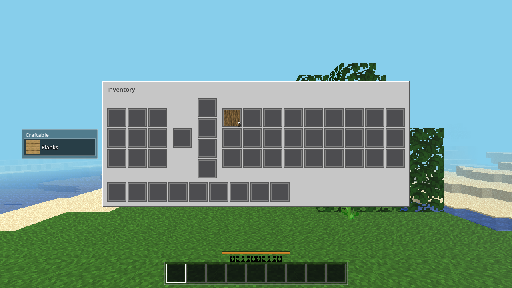
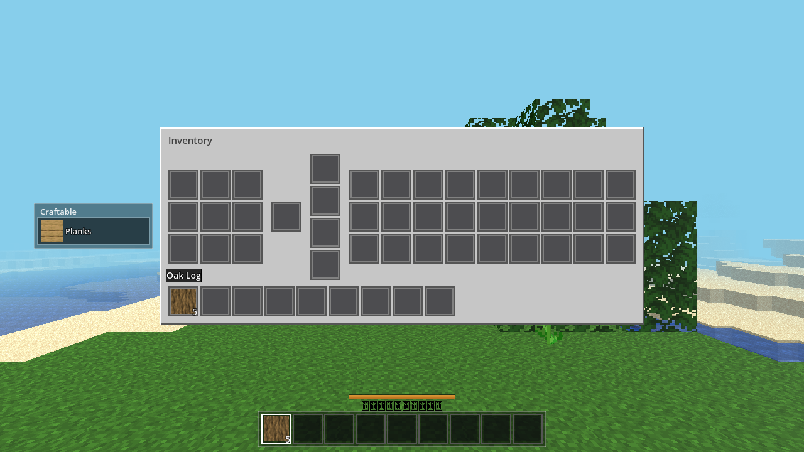

1. Wrong Callable argument order (the big one, broke ALL platforms, not just web).
Slots were wired with
c.cb = Callable(self, "_route_click").bind(_slots.size()) — bound arguments are
appended — but the handler was called as
cb.call(button, shift) against a signature
_route_click(si, button, shift).
So every click executed as _route_click(button, shift, slotIndex) →
si received the button value, the area lookup landed on "hotbar_bottom", and the only effect was
p.sel = 0. Every storage/craft/output/armor/hotbar-in-panel click was a silent no-op.
This is why M7a headless passed (it calls Debug.inv_click → the player click API directly, bypassing the UI)
while the user saw nothing happen in the browser.
2. Godot GUI mouse-focus semantics. The engine keeps gui.mouse_focus on the control where a button
was pressed and routes the release back to that same control (verified in
Viewport::_gui_input_event, 4.7 scene/main/viewport.cpp). A release never reaches the control
under the cursor — so an MC-style LMB drag (down on slot A, release over slot B) can't work by just handling
pressed=false; the UI must resolve the drop target itself from the release position.
ui/inventory.gd — _route_click signature corrected to
(button, shift, is_press, si) matching the bound call; mouse release events now routed; new
_release_drop(p, gpos) resolves the slot under the release position (slot rect scan) and dispatches the
release action (place/merge/swap, equip, craft-grid drop, hotbar-bottom select). SlotCtl captures the release
position in its own space (rel_pos = position + mb.position; the engine rewrites the event position into the
focused control's local space). The mouse-mode guard now also passes while a UI is open (web export reports
mouse_mode from the live browser pointer-lock state — DisplayServerWeb::mouse_get_mode() — so a
stale CAPTURED can't swallow UI clicks). Held-cursor control moved to top z-order so a dragged item is never hidden
behind the panel.player/player.gd — click API gained an explicit release parameter. New drag_held
state: set only when a press grabbed a stack, cleared on any place/shift/RMB/close/death. Release actions
place/merge/swap the held stack into the target; a release never grabs (keeps the web spec's 2-click flow intact:
down places, up no-ops). close_inventory/death clear the flag (grid-lost-on-close quirk untouched).
Death now sets MOUSE_MODE_VISIBLE (mirrors frozen spec's document.exitPointerLock() on death,
so the Respawn button is clickable in the browser). Debug key V → Debug.seed_inv() (deterministic
browser pre-populate: 5 oak logs in storage slot 0).autoload/debug.gd — Debug.seed_inv().scenes/main.gd — new regression harness AWECRAFT_LOGIC=guiclick: replays the exact UI
driver calls (grab → drop via _release_drop position resolution, 2-click flow, no double-place on release,
grab+release same-slot no-op).| Gate | Result |
|---|---|
1a. Headless AWECRAFT_LOGIC=craft (M7a semantics incl. grid-lost-on-close, held-return) | PASS ok:true, bit-identical to pre-fix output |
1b. Headless AWECRAFT_LOGIC=guiclick (new: grab/drop/2-click/release edge cases) | PASS ok:true |
| 1c. Battery player/interact/light/fluids/buckets + plain quit | PASS, zero script errors (interact drop_spawned:false seen once = pre-documented 1/8 RNG flake, retry green) |
| 2. BROWSER PROOF (playwright/chromium vs https://localhost:8443, 1280×720, 1:1 canvas) | PASS — see below |
3. Web rebuilt via ./build_web.sh (served, new pck mtime/size confirmed) | PASS |
Browser script: load → wait for world → V (seed 5 logs in storage[0]) → E (open) → before.png → mouse down at storage slot 0 → move to in-panel hotbar slot 0 (24 steps) → mid_drag.png → up → after.png. Pixel asserts (region-averaged): before = log texture at storage[0], hotbar[0] empty; mid = storage[0] empty + log-texture held cursor following mouse at mouse+(14,14) rendered above the panel; after = log ×5 at hotbar[0] (tooltip "Oak Log"), storage[0] empty, held cursor gone. The item moved via the scripted LMB drag.
Before — seeded: 5 oak logs in storage slot 0 (top-left of storage grid):

Mid-drag — log picked up (storage empty), held cursor trailing the mouse, drawn above the panel edge:
After — log ×5 placed in hotbar slot 0 (tooltip visible); storage empty; held cursor cleared:

requestPointerLock() on new world (index.html:3163–3200), and
the established fallback (click to capture, drag-look otherwise) is BUGWEB-1's design. Not a script error; no action.guiclick.godot/ui/inventory.gd slot click routing: arg order, press+release, _release_drop, guard, held z-order godot/player/player.gd click API release param + drag_held state, close/death flag clears, V debug key godot/autoload/debug.gd Debug.seed_inv() godot/scenes/main.gd AWECRAFT_LOGIC=guiclick regression test (+ _heldpair helper) web/ rebuilt (AC-0045 build)